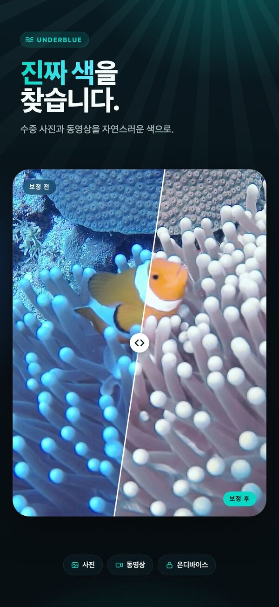
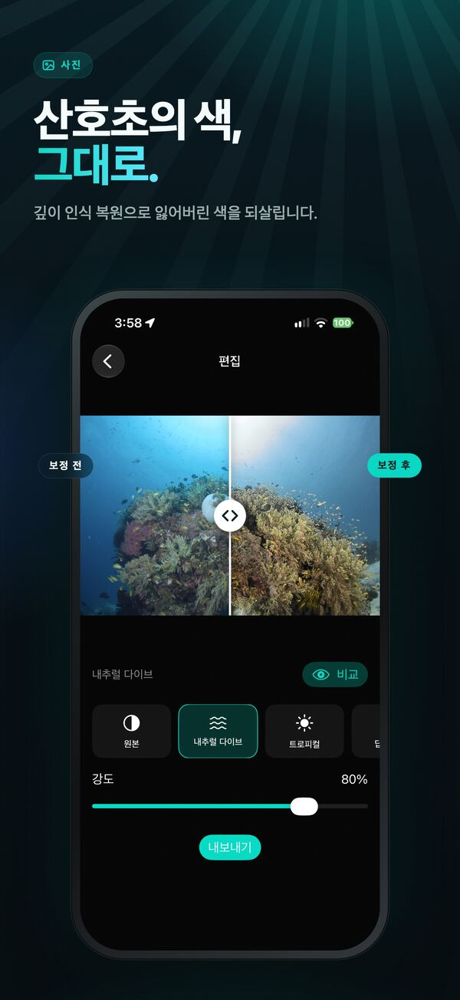
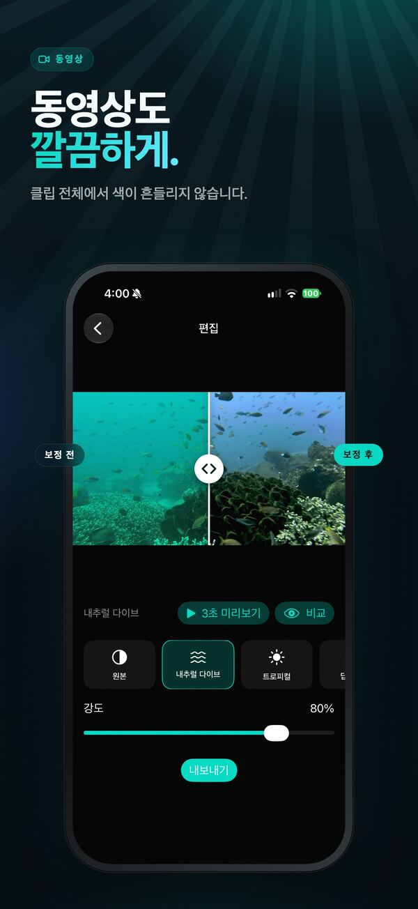
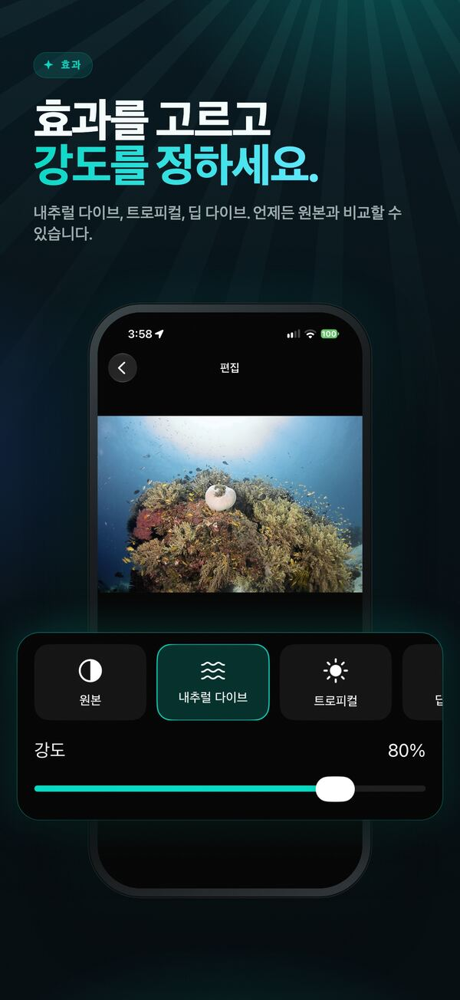
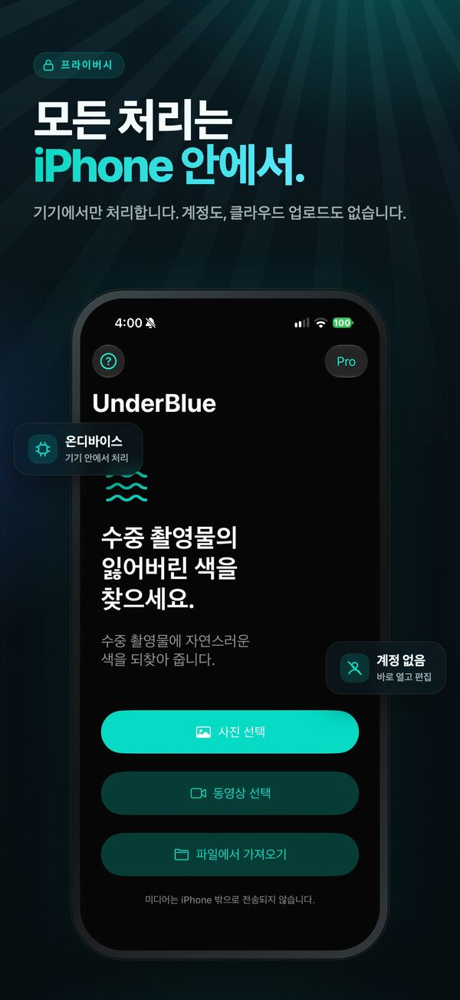

수중 촬영의 색을 되찾다
iPhone에서만 처리되는 깊이 인식 보정으로 수중 사진과 영상의 자연스러운 색과 선명함을 되찾으세요.

UnderBlue는 수중 사진과 영상에서 사라진 색과 선명함을 자연스럽게 되살립니다.
사진이나 영상을 선택하고 원하는 효과를 고른 뒤 원본과 비교하세요. 효과의 강도를 조절하거나, ‘사용자’ 효과에서 밝기·대비·채도·선명도·색온도를 직접 맞출 수 있습니다. 내부적으로는 깊이 인식 수중 복원 기술을 사용해 색 손실과 후방 산란을 줄이면서도 결과가 과장되거나 영상의 색이 흔들리지 않도록 처리합니다.





주요 기능
- 내추럴 다이브, 트로피컬, 딥 다이브 효과
- 조절 슬라이더 5개를 갖춘 ‘사용자’ 효과
- 깊이 인식 사진·영상 복원
- 프레임마다 색이 깜빡이지 않는 안정적인 영상 보정
- UnderBlue Pro에서 원본 해상도 및 4K 영상 내보내기
- SDR 및 지원되는 HLG/PQ HDR 영상 출력
- UnderBlue Pro에서 게인 맵을 포함한 HDR 사진 내보내기
- 사진 앱, 파일 앱(카메라 RAW 포함), 공유 시트에서 가져오기
- 원본 프레임률, 타이밍, 방향 및 오디오 유지
- 계정이나 클라우드 업로드 없는 완전한 온디바이스 처리
무료로 써 보세요
사진 1장과 영상 1개의 첫 10초를 무료로 내보낼 수 있습니다. 일회성 구매인 UnderBlue Pro는 사진 무제한(한 번에 최대 10장), 전체 길이 영상, 4K 및 지원되는 HDR 내보내기를 잠금 해제합니다.

UnderBlue는 레저 다이빙의 추억을 위한 앱이며 과학적 색 측정이나 전문가용 컬러 그레이딩 도구가 아닙니다.
Mac 버전 — 출시 예정
다이빙 한 번의 사진과 영상을 Mac에서 한꺼번에 보정하세요.